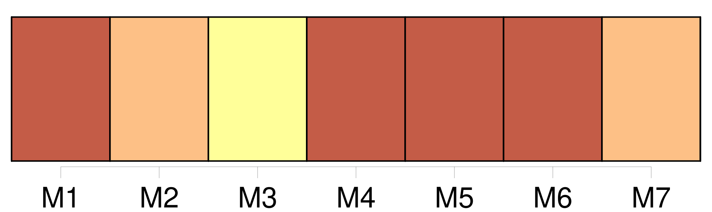
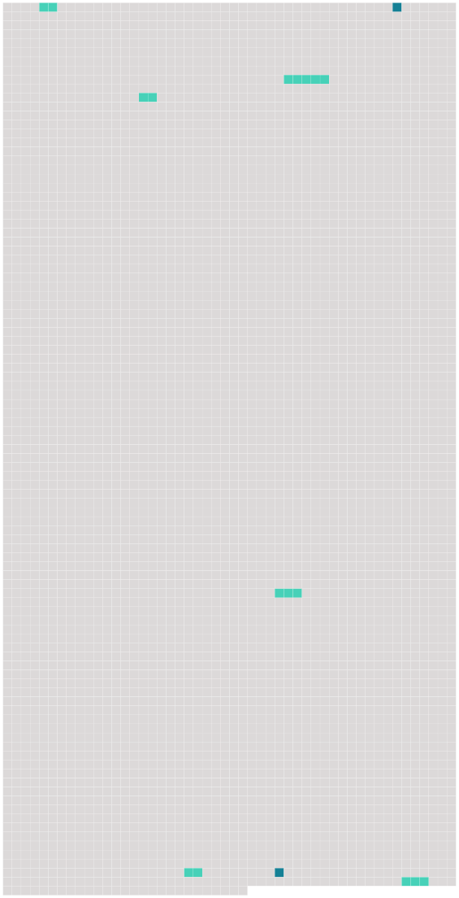

Longueur nb maillons : 8 mentions |
 |
Je croyais avoir déclaré [mon amour] à une personne insensible.
J'oubliais que M. et Mme Grangier eussent pu entendre sans le moindre inconvénient tout ce que j'avais dit à leur fille ; mais, moi, aurais -je pu [le] lui dire en leur présence? [29 phrases]
Ressentant [de l'amour pour Marthe] , j'en ôtais à René, à mes parents, à mes sœurs. [2 phrases]
Dans cette impatience, Marthe verrait la preuve de [mon amour] , disais -je, et si elle refuse de la voir, je saurais bien l'y contraindre. [134 phrases] [Mon, amour] puisant dans cette rencontre une mauvaise énergie, j'aurais pu, ensuite, lutter contre mon père ; tandis que l'orage éclatant après une journée de vide, de tristesse, je rentrai le front bas, comme il convenait. [86 phrases] Au contraire, j'y vis la preuve que [mon amour] était mort, et qu'une belle amitié [le] remplacerait. [2 phrases] Il y a quelques mois, quand je rencontrais Marthe, [mon prétendu amour] ne m'empêchait pas de la juger, de trouver laides la plupart des choses qu'elle trouvait belles, la plupart des choses qu'elle disait, enfantines. |
 |
Il est possible de télécharger la ressource sur la page Ortolang |
Si vous avez des questions ou vous voyez des erreurs, merci d'envoyer un mail à silvia.federzoni89@gmail.com |